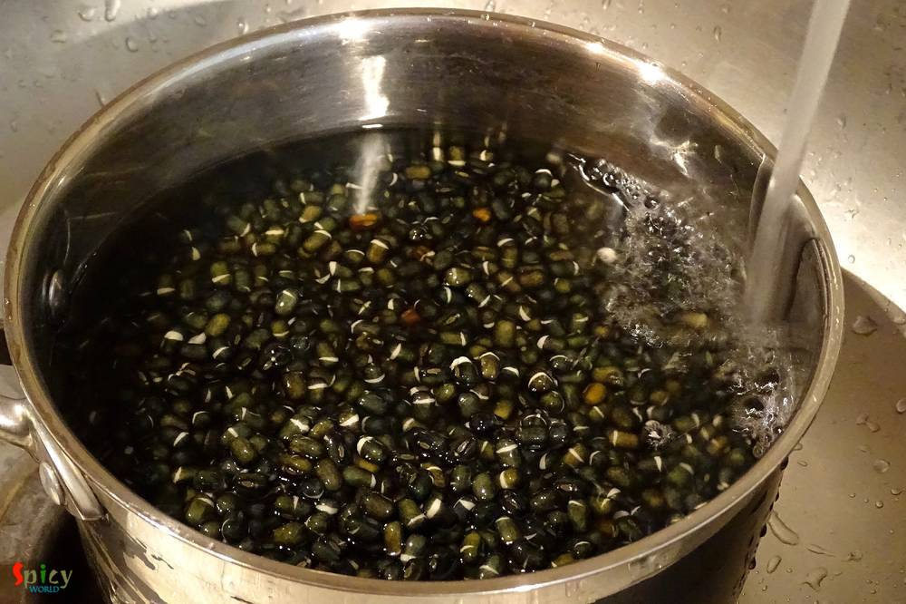

Simple and Easy Recipes
Daal Bukhara / Spicy Black Lentils Soup
© 2016 Spicy World, Published on: Dec 30, 2015
I heard a lot about this dish in past few months and started to research. As I never tasted it before, so I went to an Indian restaurant in Austin named 'Bombay Bistro' and tasted their 'daal bukhara'. Oh my god, it was lip smacking good and then I realized why this dal is so famous. Texture of the dal really impressed me a lot. The authentic recipe is very simple and easy but main trick here is the cooking time. The more you cook, the more texture and taste you will get. I made this dal along with butter naan and the combo was heavenly. Try this in your kitchen and let me know how it turned out.

Ingredients
- 1 cup of Whole urad dal / Black lentils.
- Purée of 2 tomatoes.
- 1 and half Teaspoon of red chilli powder.
- 1 Teaspoon of ginger and garlic paste.
- 5 Tablespoons of butter.
- 1 Teaspoon of garam masala powder.
- half cup of heavy cream.
- Salt.
- Warm water.

Steps
Wash and soak the urad daal overnight in enough water.
After soaking wash the daal thoroughly for 2-3 times.
Put the lentils in pressure cooker along with some salt and 2-3 cups of water.
Give it pressure for 30-40 minutes. Lentils should be soft.
Add tomato purée in the boiled dal. Mix it.
Then add ginger and garlic paste. Mix it well.
After that add red chilli powder. Mix it and if you want more heat, add more.
Add the butter and salt. Mix it.
Add the cream and mix the entire thing well. Cook this in slow flame for 1 hour.
Keep stirring the dal in 2-3 minutes.
If it becomes dry, add half cup of warm water.
Lastly add garam masala powder and turn off the heat.
Your dal bukhara is ready ...
Add a dallop of butter on the dal and enjoy!!
")